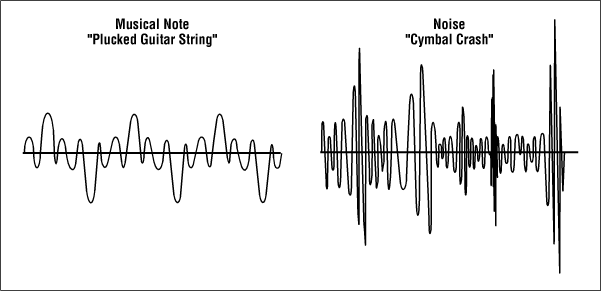
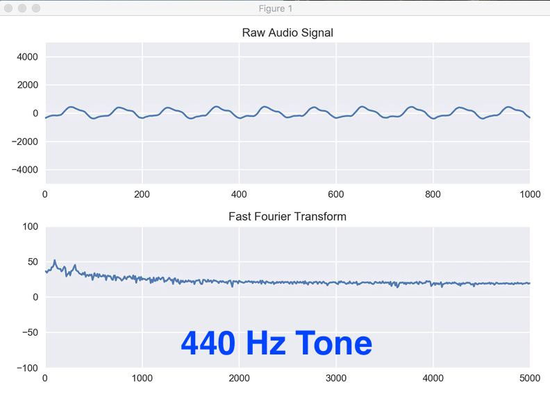
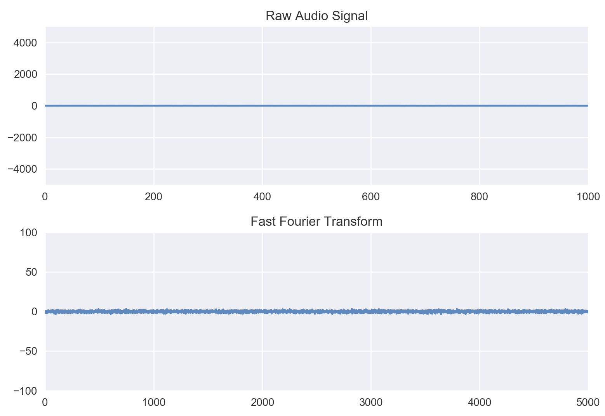
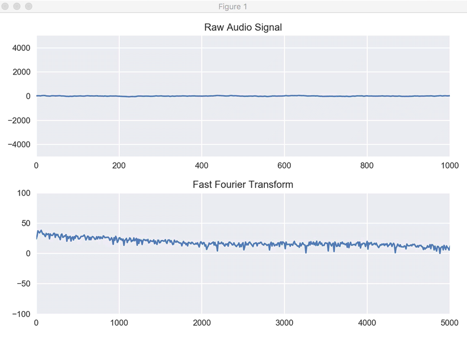

Streaming Audio with Python
June 19, 2017 - PythonOne of my great loves, besides data, is music and audio recording. I spend a lot of my free time playing and recording music - watching waveforms come into existence via microphone. The shape of the different waveforms is fascinating to me. For example: 
So then I thought, why not create a little tool to visualize waveforms on the fly? Basically, an oscilloscope for sounds. Even better, this is a great chance to learn how to work with microphones in Python. So let me show you what I've made.
 Here we've plotted a pure 440 Hz sine wave tone. We see in the top plot that we have a pretty consistent shape, even though it's a little out of time with our sampling so it's sliding around. In the bottom plot we are looking at frequency information and we can see some dominant peaks which correspond to the tone! Let's start looking through the code, step by step, starting with our imports.
There are a couple of key components: PyAudio, MatPlotLib, and Numpy. PyAudio is the tool we'll be using to interact with the microphone. MatPlotLib is how we'll be drawing our oscilloscope, and Numpy is how we'll be interacting with the data... since the data will be coming in as a huge list of numbers. The other import (Seaborn) is a little helper we use to make our plots prettier. Now let's set up our plots.
We're creating two plots (in matplotlib terms, two 'subplots'). The first one will hold the raw audio from the microphone as we sample it, and we'll update this plot every time we get new data. The second plot will hold the 'Fast Fourier transform (FFT).' We'll talk about that in a bit. To start out, we're filling in with random data. We just want tin initialize the plots so that they are holding some sort of data and we can tell the plots how big to be. After we have those plots ready, we'll be good to go. The initial state of the plots looks like this:  Now time for the fun part, let's get the microphone online. This is where pyAudio comes in, it allows us to grab control of the microphone from the computer. Then, we can use the commands from pyAudio to grab chunks of audio for processing. So let's initialize pyAudio.
Okay, so here we have some things to unpack. First, we set up a number of settings we're going to input. We want pyAudio to retrieve integers from the audio (this is for memory purposes). Then we tell it we're only interested in one channel of audio (avoiding stereo recording issues), and we want to sample at 44100 Hz. Don't worry about the last one too much, just know that that's the default value and we want to use it. There are a few other settings I've left in so you can see them, but we don't use them here (though we'll use CHUNK below). Then we spawn an instance of pyAudio with those settings and tell it we are only interested in the microphone (input) and not the speakers (output). We also set a global variable called "keep_going" which we're going to use to control when we should stop the program. Woo, we now control the microphone with Python. Now let's make some magic happen.
Here we're making a function that takes in a chunk of data, then updates the plots. The first thing to do is make sure it's all numeric (just to double check), then we go ahead and compute the Fourier Transform. The Fourier transform essentially converts the time on the x-axis to having frequency on the x-axis. So we'll have two plots, one with "signal strength vs time" and one with "strength of frequency vs frequency." The second plot will show us the average pitch of the sound, with peaks forming to show us where the sound is currently strongest in terms of notes (which are just frequencies). That's what the rest of this function does; it updates the plots on the fly. We do this because we don't want to re-draw the axes every time since that is really slow. Instead we just force the newest data into the plots over and over, creating the illusion of data cycling through. At the end, we check if "keep_going" is still set to be true and send back whether we should do another update. Now let's look at how we control all of this. One last note, the scale on the axes are currently arbitrary to some extent. I'm working on making those concrete, but this first version is a proof-of-concept.
First, we open our audio stream, then we print some messages to let the user know how to break out of the loop, and then we get to the meat of the control. We tell python to keep getting data and sending it to the update function until the user interrupts the loop by pressing 'Ctrl+C.' Calling 'plot_data(stream.read(CHUNK))' tells the microphone to get 1024 bytes worth of data and then send it through the plotting algorithm. The last piece of this is releasing the microphone gracefully when the user presses 'Ctrl+C' which is all taken care of after the 'while' loop. All together, and in the much revered GIF format, this looks like:  This clearly needs some touch-ups in order to handle the different volume scales, but it's working! You can see my voice in action and start to pick-out some of the harmonics in the Fourier Transform that are signatures of my voice. You can see a peak that shows up a few times right around 500, which seems to correspond to some resonance in my voice. I'm looking forward to playing some different instruments and watching them form into their characteristic shapes.
If you'd like to play with this, the code is here (and only works for Python 2.6+ right now): Stream Audio with Python. Once you download this via Github, you'll need to also install numpy, matplotlib, seaborn, and pyAudio using Python's package manager. After that, you should be good to go by typing python streamAudio.py into a terminal! Have fun!